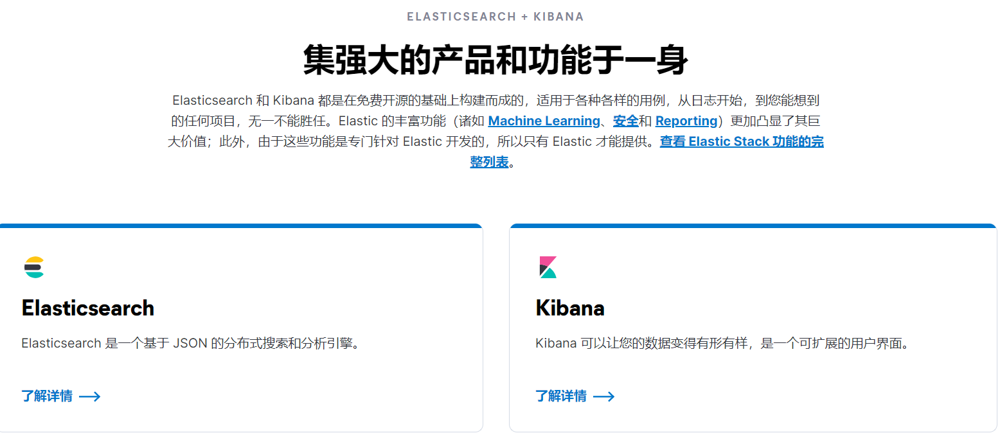

Elasticstack学习笔记
1.Elasticsearch产品简介
https://www.elastic.co/cn/elastic-stack/

文档：https://www.elastic.co/guide/cn/elasticsearch/guide/current/index.html
2.Elasticsearch与Kibana入门
2.1.安装与运行
2.1.1.安装JDK1.8
2.1.2.下载安装Elasticsearch
https://www.elastic.co/cn/elastic-stack/
https://www.elastic.co/cn/elasticsearch/

2.1.3.配置Elasticsearch

配置启动时JVM参数:
-Xms2g
-Xms2g

运行有两种模式：

2.1.4.配置启动Elasticsearch集群

./elasticsearch.bat
./elasticsearch.bat -Ehttp.port=8200 -Epath.data=node2
./elasticsearch.bat -Ehttp.port=7200 -Epath.data=node3
http://localhost:9200/_cat/nodes?v
http://localhost:9200/_cat/nodes
*为主节点
http://localhost:9200/_cluster/stats
2.1.5.Kibana安装与运行
https://www.elastic.co/cn/kibana/
https://www.elastic.co/cn/downloads/kibana

2.1.6.Kibana配置

2.1.7.Kibana常用功能

2.1.8.Elasticsearch常用术语
Document文档数据
Index索引，理解成Mysql的数据库,Document都存储在Index中
Type索引中的数据类型，为myslq表的数据类型，简单理解为table
Field字段，文档的属性
Query DSL查询语法
2.1.9.Elasticsearch CRUD操作
创建：

accounts 为Index，person为Type
我们在accounts 这个Index的下面person为Type的下面创建1个id为1的文档.name…等都是文档字段。
使用Kibana的Dev Tools运行。

读取：


修改：


删除：


2.1.10.Elasticsearch 查询操作
有2种形势:
- Query String:
1 | GET /accounts/person/_search?q=1 |
- Query DSL:
1 | GET /accounts/person/_search |
3.Beats入门
3.1.Beats简介
Beats 是一个免费且开放的平台，集合了多种单一用途数据采集器。它们从成百上千或成千上万台机器和系统向 Logstash 或 Elasticsearch 发送数据。
https://www.elastic.co/cn/beats/
产品系列：

FILEBEAT：无论您是从安全设备、云、容器、主机还是 OT 进行数据收集，Filebeat 都将为您提供一种轻量型方法，用于转发和汇总日志与文件，让简单的事情不再繁杂。
METRICBEAT：用于从系统和服务收集指标。Metricbeat 能够以一种轻量型的方式，输送各种系统和服务统计数据，从 CPU 到内存，从 Redis 到 Nginx，不一而足。
PACKETBEAT：监测网络流量对于获得可观测性和保护环境至关重要，有助于确保高水平的性能和安全性。Packetbeat 是一款轻量型网络数据包分析器，能够将主机和容器中的数据发送至 Logstash 或 Elasticsearch。抓包分析服务器网络。
WINLOGBEAT：用于密切监控基于 Windows 的基础设施上发生的事件。使用 Winlogbeat，将 Windows 事件日志流式传输至 Elasticsearch 和 Logstash。
HEARTBEAT：通过主动探测来监测服务的可用性。通过给定 URL 列表，Heartbeat 仅仅询问：网站运行正常吗？Heartbeat 会将此信息和响应时间发送至 Elastic 的其他部分，以进行进一步分析。健康检查。
地位：

Beats把所有数据直接传输给elasticsearch，或者传输给logstash处理转换后再传入elasticsearch。最后通过kibana做可视化展示。
3.2.Filebeat简介
filebeat 不需要知道 master 节点，你给 filebeat 的是 data 节点地址即可，不必给 master 节点地址
3.2.1.处理流程
- 输入Input
- 处理Filter
- 输出Output
3.2.2.构成

Prospector:
针对配置的日志文件探测文件是否有变化，有变化就收集新的日志。1个Filebeat可以有多个Prospector。Prospector 1针对/var/log/*.log所有log文件。Prospector 2针对/var/log/apache2/*下的所有文件。
Harvester:
每个Prospector针对自己匹配的日志文件会为每一个日志文件启动1个Harvester。
3.2.2.Filebeat Input配置
yaml语法：

input_type为数据输入类型，目前有2个类型：log、stdin
paths是指定位置
3.2.3.Filebeat Output配置
支持输出对象类型：
- console
- elasticsearch
- logstach
- kafka
- redis
- file
配置为elasticsearch和console：

3.2.4.Filebeat Filter配置简介

Include_lines:当达到这个条件就读入这一行。
exclude_lines:当达到这个条件就不读这一行。
exclude_files:当达到这个条件就不读这文件。
drop_event:当满足这一条件就不输出，直接扔掉
drop_fields:当满足这一条件就不输出，把某一字段扔掉
drop_event:当满足这一条件就不输出，直接扔掉
drop_event:当满足这一条件就不输出，直接扔掉
Decode_json_fields:对于这条数据里面符合json格式的字段做json解析
Include_fields:加入一些字段或只想取数据里面的某一些字段
例子：
1.当DBG开头的就丢掉，把debbug日志丢弃

2.inner后数据是字符串需要做json处理，恢复正常json格式

新特性：

3.2.5.Filebeat Module简介

3.2.6.Filebeat 收集Nginx日志实践
通过stdin收集日志，通过console输出
1.下载Filebeat
https://www.elastic.co/cn/downloads/beats/filebeat
filebeat是基于go-lang开发的
2.配置filebeat.yml
1 | # ============================== Filebeat inputs =============================== |
3.3.Packetbeat简介


-strict.perms=false不检查权限，方便运行
4.Logstach入门
4.1.Logstach简介
Data Shipper,ETL,Extract,Transform,Load
https://www.elastic.co/cn/logstash/
集中、转换和存储数据
Logstash 是免费且开放的服务器端数据处理管道，能够从多个来源采集数据，转换数据，然后将数据发送到您最喜欢的“存储库”中。
4.2.Logstach处理流程
Input：file、redis、beats、kafka
Filter：grok(表达式，类似正则)、mutate(结构化后数据增删改查)、drop、date
Output：stdout、elasticsearch、kakfa、redis
4.3.Logstach配置
4.3.1.处理流程—input和output配置

4.3.2.处理流程—Filter配置


5.实战：分析Elasticsearch查询语句
5.1.目标
收集Elasticsearch集群的查询语句
分析查询语句的常用语句、响应时长等
5.2.方案
应用Packetbeat + Logstash完成数据收集工作
使用Kibana + Elasticsearch完成数据分析工作

5.3.环境配置

5.4.方案之logstach

5.5.方案之packetbeat

5.6.kibana数据分析


6.总结与建议